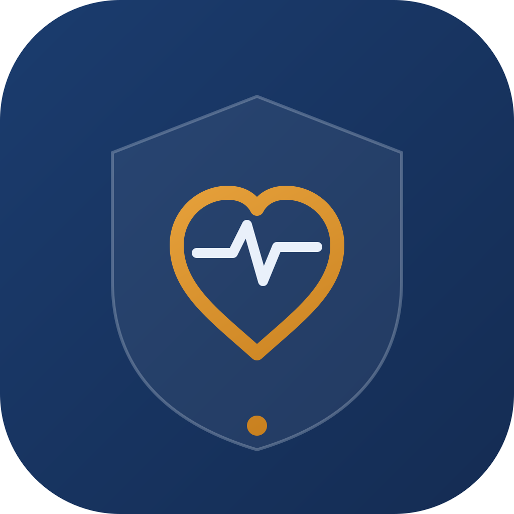
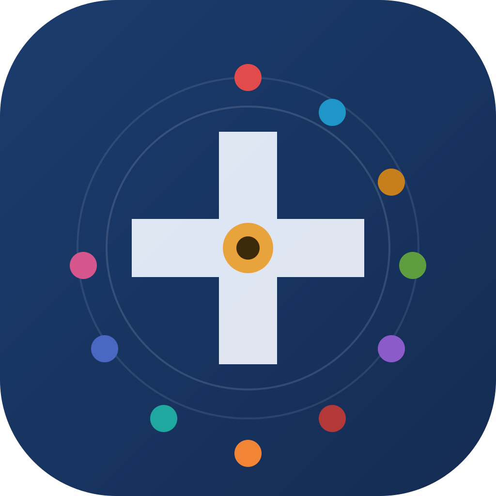
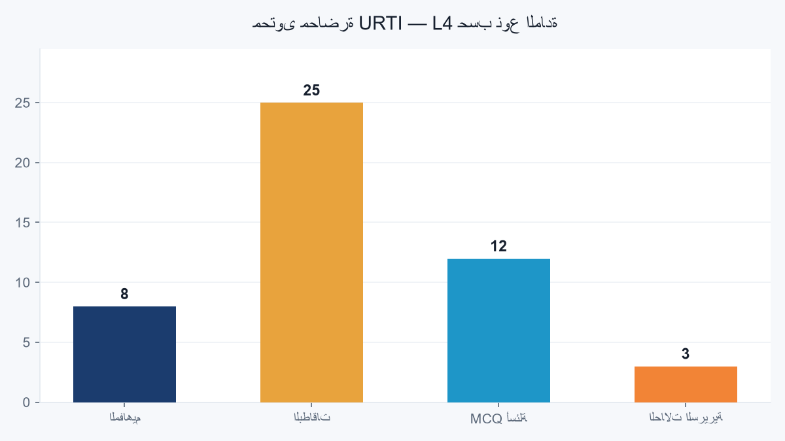
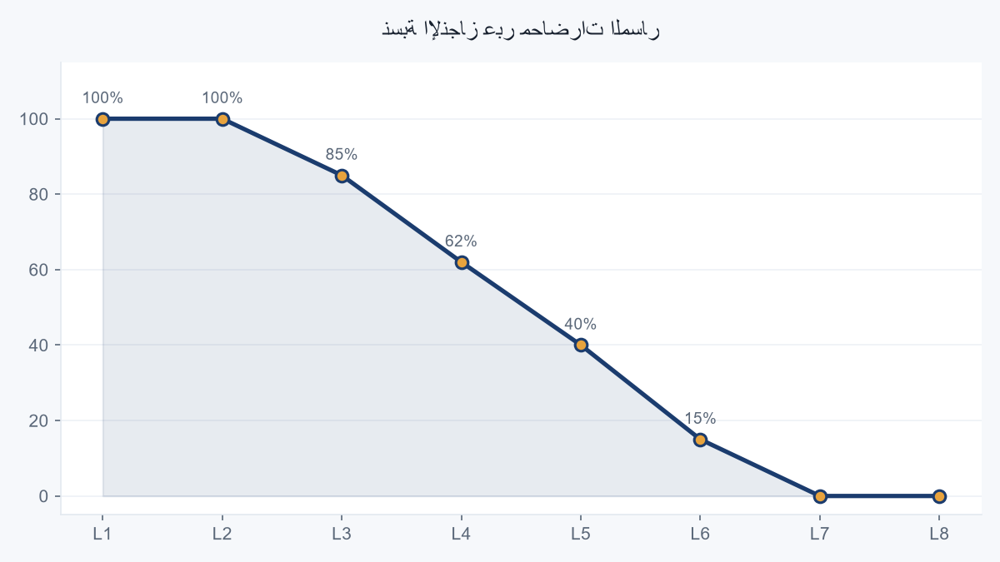
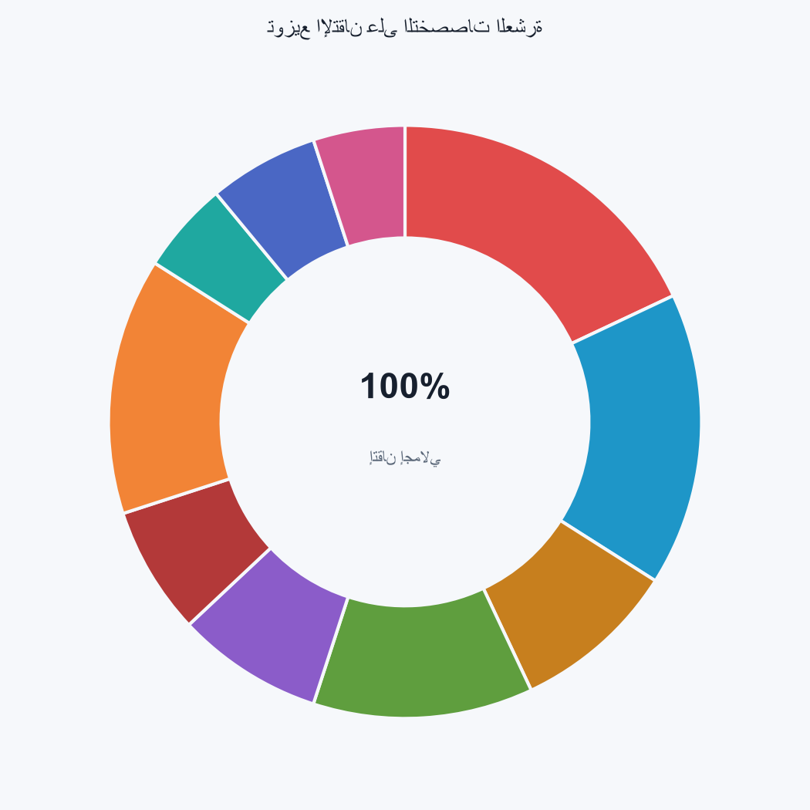
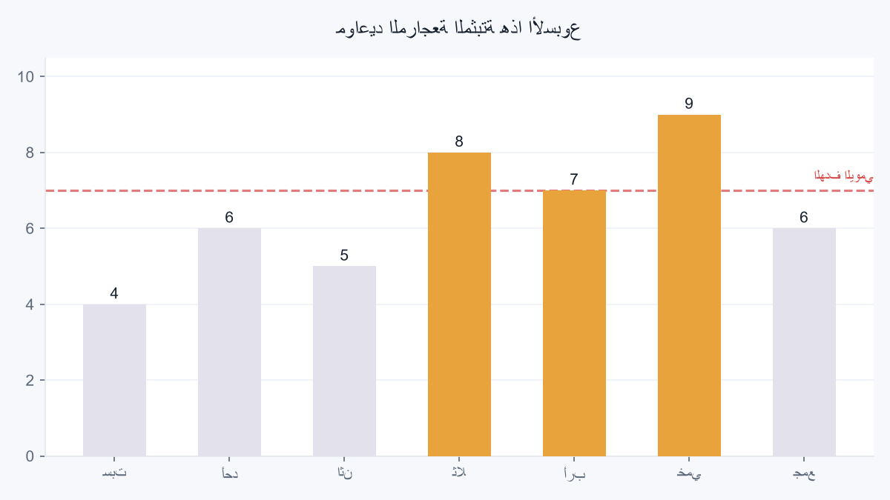

كل الألوان والخطوط والمسافات هنا منقولة من نظام التصميم الفعلي للتطبيق — جرب تبديل الوضع وستفهم فلسفة «الحاوية أولاً».
ثلاثة اتجاهات، كلها بألوان الـ tokens الفعلية (كحلي #1B3C6E + ذهبي #E8A33D). لاحظ أن الشعار الحالي في assets/brand/app_logo.svg يستخدم ألواناً خارج النظام — هذه مفاهيم مُوحّدة.


بدّل الوضع في الأعلى وشاهد الألوان تتحوّل — هذه نفس آلية AppColors.primary(brightness) في التطبيق.
نسخة mockup مطابقة لتخطيط medicine_home_widget.xml (أهدافي + لؤلؤة اليوم) — الويدجت نفسه لا يتغير هنا، هذا معاينة للتصميم في الوضعين.
أزرار وبطاقة محاضرة بأسلوب «حدود لا ظلال» — انقر الأزرار لترى تفاعل الانكماش (0.97 / 120ms) نفسه في التطبيق.
ولّدت الرسم الأول من ملف محتوى فعلي في تطبيقك (L4_URTI_lecture_content.json) — نفس أسلوب العرض يمكن أن يغذّي شاشة الإحصاءات مستقبلاً.



